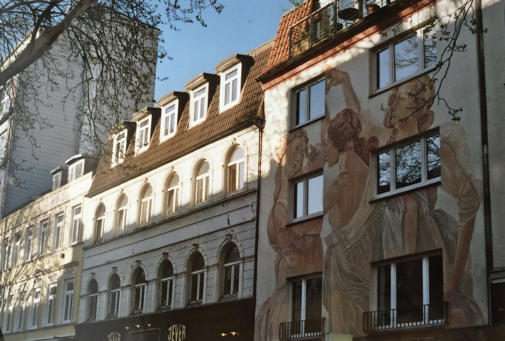
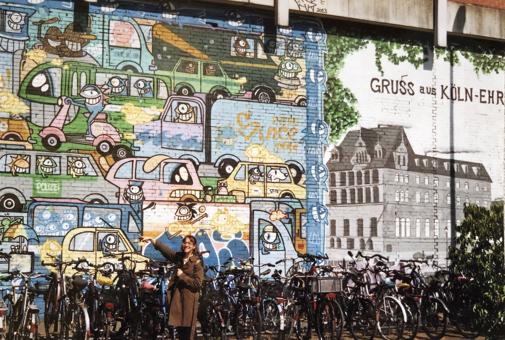
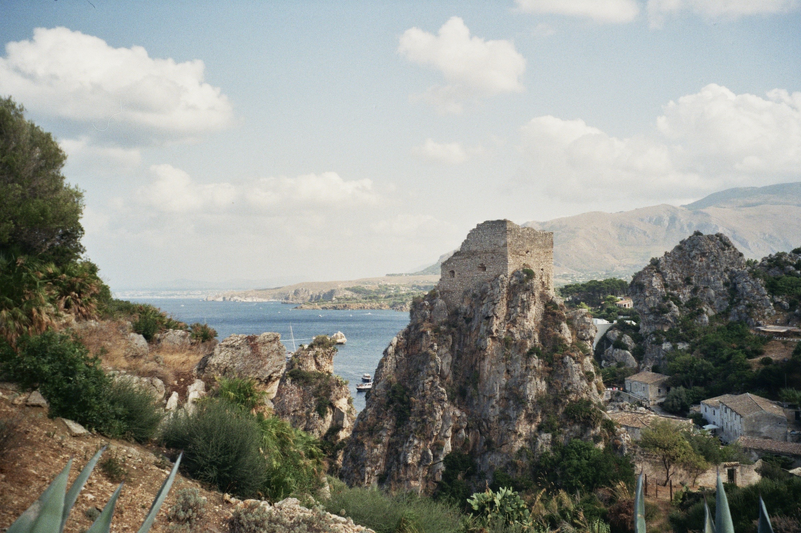
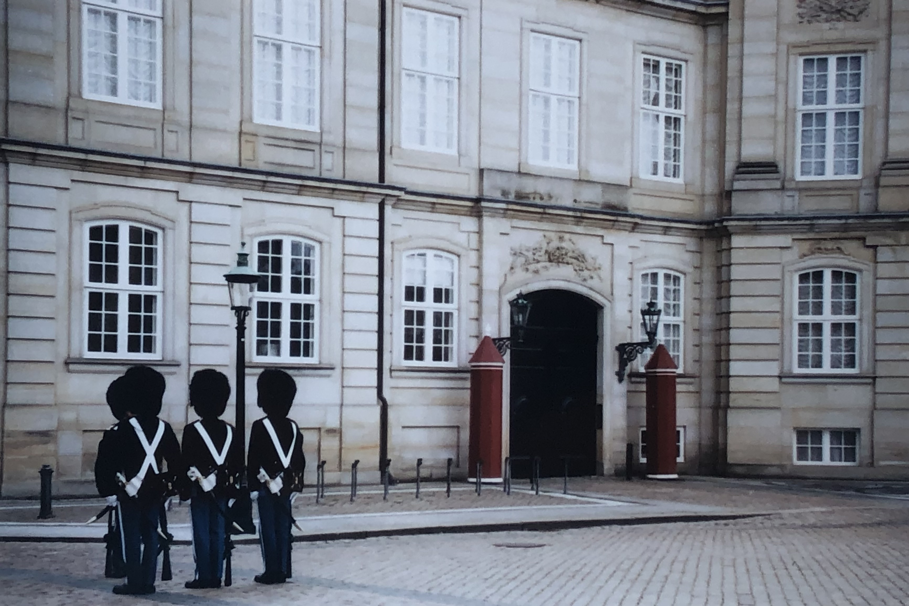
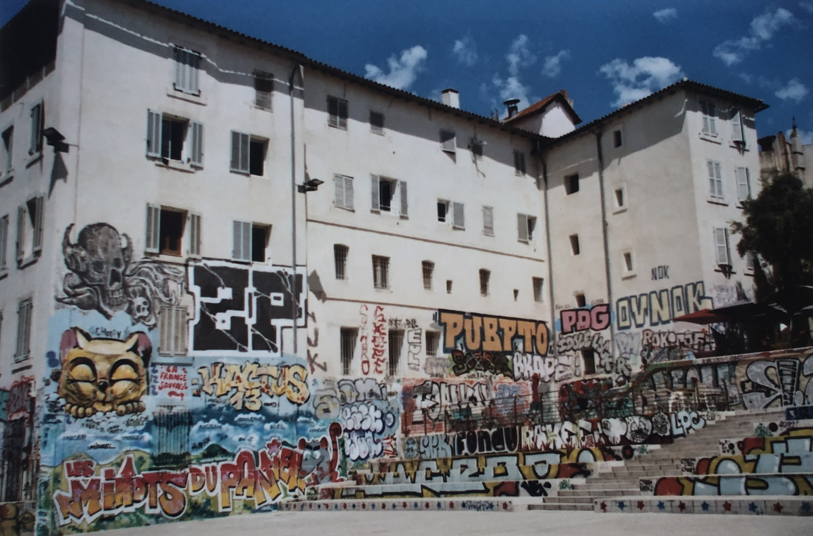
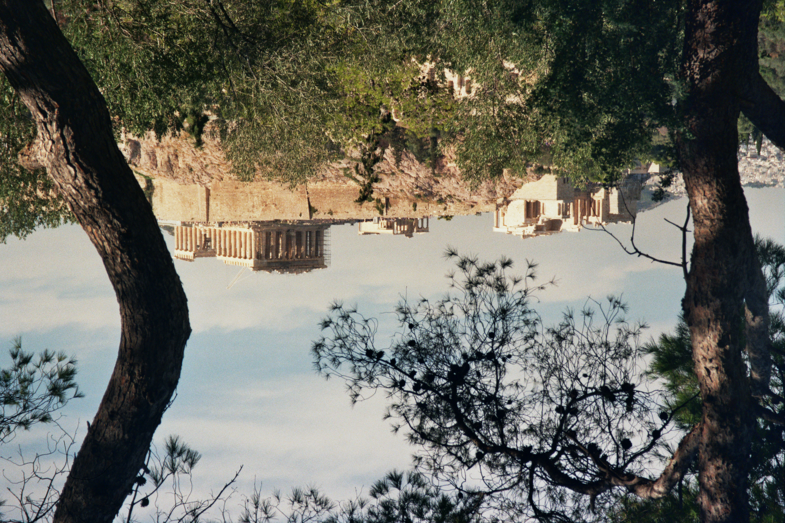
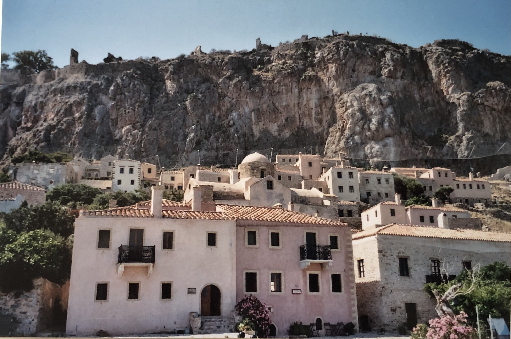

Erica around Europe
Hamburg

1 - The tree Graces
Cologne

2 - Erica pointing at street art in Köln-Ehrenfeld
Castellammare del Golfo

3 - The best location for a wedding (friends' wedding)
Copenhagen

4 - The changing of the guard in Lon... Copenhagen
Marseilles

5 - More street art, but in Marseilles
Athens

6 - The Acropolis seen from Philopappos Hill
Monemvasia, Laconia

6 - The old city of Monemvasia in Laconia
Congratulations: you have made it to the end!
Click on the boiling pot for a bonus pic:

Photo Gallery